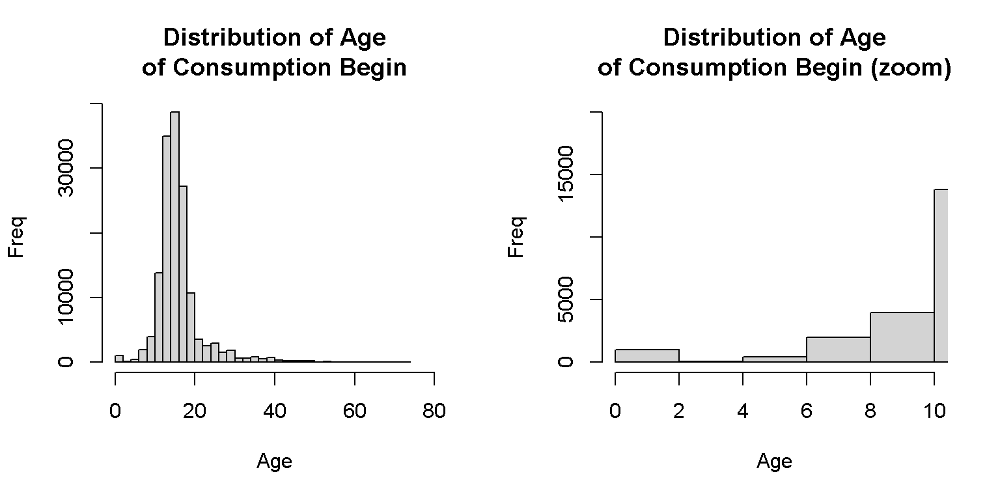

This page will be used to comment and understand the steps, advances and douts about the process of data preparations and standardization of the SISTRAT C1 (Convenio 1) which can be translated to Agreement on Collaboration, Technical Assistance and Transfer of Resources to General Population (“Convenio de Colaboración Técnica y de Transferencia de Recursos para Programa de Población General”). Must note that it does not include Adolescent criminal offenders (C2).
To see the TOP or Profile of Treatment Results (“Perfil de Resultados de Tratamiento”) data preparation, go to this webpage.
Define working directories which contains different text files that will be merged, correspondent to the years of the C1 Sistrat.
dir_c1 <-toString(paste0(getwd(),"/Encriptado c1/Personas tratadas c1/"))
dir_top <-toString(paste0(getwd(),"/encriptados TOP/"))
#In my case,
dir_c1 <-toString(paste0("G:/Mi unidad/Alvacast/SISTRAT 2019 (github)","/Encriptado c1/Personas tratadas c1/"))
dir_top <-toString(paste0("G:/Mi unidad/Alvacast/SISTRAT 2019 (github)","/encriptados TOP/"))Define files in the Directory folder, as long as they have the excel extension and they do not start with ~ (represent a working temporary file in excel)
SISTRAT_c1<-list.files(path=toString(dir_c1), all.files=T, pattern="^[2].*\\s*txt$")SISTRAT_c1 is composed by the following files: * 2010tab-Resultado-20191113 (1).txt * 2011tab -Resultado-20191113.txt * 2012tab-Resultado-20191113.txt * 2013tab-Resultado-20191113.txt * 2014tab-Resultado-20191113.txt * 2015tab-Resultado-20191113.txt * 2016tab-Resultado-20191113.txt * 2017tab-Resultado-20191113.txt * 2018tab-Resultado-20191113.txt * 2019_EneOcttab-Resultado-20191113.txt
Function to read tab delimited text files, with UTF-8 encoding and, based on the first 7 letters of its name, assign them an object name.
read_excel_mult <- function(dir, filename) {
assign(paste0(substr(filename, 1, 7)),read.delim(paste0(dir, filename),
na.strings="null", header = T, fileEncoding="UTF-8"),envir = .GlobalEnv)
}To import the datasets, we apply the previous function to every dataset
for (x in SISTRAT_c1) {
read_excel_mult(as.character(dir_c1), x)
}Normalize datasets by defining a common name for hash key’s (“HASH_KEY”) and assign them an standardized name.
tab_10_18_mod <- function(x,y) { get(x) %>% dplyr::rename("HASH_KEY" = !!names(.[91])) %>%
as.data.frame() %>%
assign(paste0(y, as.character(x)),.,envir = .GlobalEnv)
}
for (i in paste0(c(2010:2018),"tab")) {tab_10_18_mod(i,y="c1_")}
`2019_En` %>% dplyr::rename("HASH_KEY" = !!names(.[92])) %>%
as.data.frame() %>%
assign(paste0("c1_", "2019tab"),.,envir = .GlobalEnv)Once normalized column names. Bind every year’s datasets by their rows.
CONS_C1=rbindlist(mget(paste0("c1_",c(2010:2019),"tab")), idcol="TABLE", fill=T)
CONS_C1 <- CONS_C1 %>% dplyr::mutate(row=1:nrow(CONS_C1)) %>% dplyr::select(row,everything())Redefine variable names, create a column named ano_bd with the year. Also, it reorder the variables to get the identifiers as the first columns.
CONS_C1 %>%
dplyr::rename(id=`Codigo.Identificación`) %>%
dplyr::rename(fech_ing=`Fecha.Ingreso.a.Tratamiento`) %>%
dplyr::rename(fech_egres=`Fecha.Egreso.de.Tratamiento`) %>%
dplyr::rename(dias_trat=`Dias.en.Tratamiento`) %>%
dplyr::rename(eva_consumo=`Evaluación.al.Egreso.Respecto.al.Patrón.de.consumo`) %>%
dplyr::rename(eva_fam=`Evaluación.al.Egreso.Respecto.a.Situación.Familiar`) %>%
dplyr::rename(eva_sm=`Evaluación.al.Egreso.Respecto.Salud.Mental`) %>%
dplyr::rename(eva_fisica=`Evaluación.al.Egreso.Respecto.Salud.Física`) %>%
dplyr::rename(eva_transgnorma=`Evaluación.al.Egreso.Respecto.Trasgresión.a.la.Norma.Social`) %>%
dplyr::rename(eva_relinterp=`Evaluación.al.Egreso.Respecto.Relaciones.Interpersonales`) %>%
dplyr::rename(eva_ocupacion=`Evaluación.al.Egreso.Respecto.a.Situación.Ocupacional`) %>%
dplyr::rename(evaluacindelprocesoteraputico=`Evaluación.del.Proceso.Terapéutico`) %>%
dplyr::rename(nmesesentratamiento=`N.Meses.en.Tratamiento`) %>%
dplyr::rename(motivodeegreso=`Motivo.de.Egreso`) %>%
dplyr::rename(tipo_centro=`Tipo.Centro`) %>%
dplyr::mutate(ano_bd=as.numeric(substr(TABLE,4,7))) %>%
select(row, TABLE, HASH_KEY,ano_bd, everything()) %>%
dplyr::arrange(id) %>%
assign("CONS_C1_df",.,envir = .GlobalEnv)Relevant variables are converted into factors.
CONS_C1_df %>%
dplyr::mutate(motivodeegreso=as.factor(motivodeegreso)) %>%
dplyr::mutate(evaluacindelprocesoteraputico=as.factor(evaluacindelprocesoteraputico)) %>%
dplyr::mutate(eva_consumo=as.factor(eva_consumo)) %>%
dplyr::mutate(eva_fam=as.factor(eva_fam)) %>%
dplyr::mutate(eva_relinterp=as.factor(eva_relinterp)) %>%
dplyr::mutate(eva_ocupacion=as.factor(eva_ocupacion)) %>%
dplyr::mutate(eva_sm=as.factor(eva_sm)) %>%
dplyr::mutate(eva_fisica=as.factor(eva_fisica)) %>%
dplyr::mutate(eva_transgnorma=as.factor(eva_transgnorma)) %>%
dplyr::mutate(sexo=as.factor(Sexo)) %>%
dplyr::mutate(embarazo=as.factor(`X.Se.trata.de.una.mujer.embarazada.`)) %>%
dplyr::mutate(tipo_de_plan=as.factor(`Tipo.de.Plan`)) %>%
dplyr::mutate(tipo_de_programa=as.factor(`Tipo.de.Programa`)) %>%
assign("CONS_C1_df",.,envir = .GlobalEnv) Most of the dates were not formatted equally. When standardized,some cases failed to transform dates, specifically in dates of discharge, which contained 87 cases, while only one case was problematic in admission dates.
CONS_C1_df %>%
dplyr::mutate(fech_ing= ifelse(row=="14504", "10/01/2011",
ifelse(row=="88379", "09/07/2015", #ACTUALIZACION 2020-01-17: cambio fecha ingreso
ifelse(row=="79428", "09/07/2015", #ACTUALIZACION 2020-01-17: cambio fecha ingreso
fech_ing)))) %>%
dplyr::mutate(fech_ing= lubridate::parse_date_time(fech_ing, c("%d/%m/%Y"),exact=T)) %>% #un caso falla en ser transformado
dplyr::mutate(fech_egres_sin_fmt= fech_egres) %>% #me quedo con esta variable por si acaso
dplyr::mutate(fech_egres= ifelse(row=="36308", "02/04/2013",
ifelse(row=="14083", "03/05/2011",
ifelse(row=="6349", "01/07/2010",
ifelse(row=="42741", "02/08/2013",
ifelse(row=="8608","01/02/2011",
ifelse(row=="11709","01/02/2011",
ifelse(row=="40486","03/07/2013",
ifelse(row=="42521","09/07/2013",
ifelse(row=="5757", "04/10/2010", #cambiado
ifelse(row=="39507", "02/07/2013",
ifelse(row=="3195", "04/10/2010",
ifelse(row=="37845", "01/07/2013",
ifelse(row=="40180", "07/08/2013",
ifelse(row=="28008", "27/11/2012",
ifelse(row=="35971", "01/03/2013",
ifelse(row=="5172", "03/05/2011",
ifelse(row=="10415", "03/05/2011",
ifelse(row=="16385", "30/08/2011",
ifelse(row=="39932", "02/08/2013",
ifelse(row=="16983", "06/09/2011",
ifelse(row=="88379", "11/04/2016", #ACTUALIZACION 2020-01-17: cambio fecha egreso
ifelse(row=="79428", "11/04/2016", #ACTUALIZACION 2020-01-17: cambio fecha egreso
ifelse(row=="37004", "02/08/2013",fech_egres)))))))))))))))))))))))) %>%
dplyr::mutate(fech_egres= lubridate::parse_date_time(stringr::str_trim(fech_egres),
orders = c("%d/%m/%Y", "%d/%m/%y","%d%m%Y"),exact=T)) %>%
dplyr::arrange(desc(ano_bd)) %>%
assign("CONS_C1_df",.,envir = .GlobalEnv) #87 failed to parse, bajé a 37, y 30 después de quitar espaciosFor discharge dates, many cases had different formats. Those had to be transformed once the first formats were traduced (e.g. 30-12-2019 is interpteted first as “%d/%m/%Y” format. If it is not traduced, it interprets in “DD/MM/YY” format (or “%d/%m/%y”). We can see in Table 1 in non-formatted date of discharge (fech_egres_sin_fmt), how was traduced into an plausible discharge date (fech_egres). One criteria is that possibly in many cases, the second and or third 0 would correspond to a month character. On the contrary, “7082013” or “9072013” would be “2013-8-70” and “2013-7-90”, respectively.
| Case | HASH | ID | Date of Admission | Date of Discharge | Date of Discharge (No Format) | Days in Treatment |
|---|---|---|---|---|---|---|
| 36,308 | b6373dccc2b0b5ffba42db746b17c692 | CAPE1**051992 | 2013-01-29 | 2013-04-02 | 2013/04/02 | NA |
| 42,741 | 090f64b945afce17900e82eccb8f8da6 | COMO2**091988 | 2013-07-02 | 2013-08-02 | 2082013 | NA |
| 40,486 | 4fc0a1cff37ad152767eb323ed3b43c0 | ELPO2**111980 | 2013-05-02 | 2013-07-03 | 307203 | NA |
| 42,521 | c668aa3153ea4a1a4435c45557feb80b | HUDO1**091969 | 2013-06-28 | 2013-07-09 | 9072013 | NA |
| 39,507 | 2f477adf8b5c282660fa16180eb5096d | LIDO2**031992 | 2013-04-29 | 2013-07-02 | 2072013 | NA |
| 37,845 | fd919f36ada0b9423cf3acdead577150 | MAZA1**111968 | 2013-03-18 | 2013-07-01 | 1072013 | NA |
| 40,180 | c8a0c6ccce12e9d3fbc74c06d6a06664 | MIMA2**111973 | 2013-05-29 | 2013-08-07 | 7082013 | NA |
| 35,971 | 132aa32661fbedca4ecdd1e2018c58e3 | PARA1**021977 | 2013-01-02 | 2013-03-01 | 01-03-2013 | NA |
| 39,932 | c87466931290f44c2c6a89bd127d31e5 | RELA2**011969 | 2013-05-22 | 2013-08-02 | 2082013 | NA |
| 37,004 | ad7eb82186ec39a61ad29aed61522c2a | SO-A2**061980 | 2013-02-08 | 2013-08-02 | 2082013 | NA |
| 28,008 | 3d50c479484a18e510d6be8f8a35a1ed | OMHU1**041990 | 2012-06-25 | 2012-11-27 | 27-11-2012 | NA |
| 14,083 | 68930653a30b13a6f6f7853d6683dff3 | CLFI1**031973 | 2011-02-10 | 2011-05-03 | 30520011 | NA |
| 14,504 | a7a1fcb4a638a7b194063d95e34320a9 | CLVE2**111966 | 2011-01-10 | 2011-08-30 | 30/08/2011 | 232 |
| 11,709 | 52eeb63fbce34e95c7687dd6007efce8 | DASA2**031986 | 2008-08-08 | 2011-02-01 | 01-02-2011 | NA |
| 10,415 | 4aa3462c09ad1a7cc1e6d249f620d715 | PATR1**061986 | 2010-04-26 | 2011-05-03 | 3052011 | NA |
| 16,385 | 1454ce9c37a56516ce054a3513361a66 | RAPA1**051983 | 2011-04-18 | 2011-08-30 | 30/08/20011 | NA |
| 16,983 | 5ebc5439f9db863ff8744778280360db | SERI1**011960 | 2011-05-13 | 2011-09-06 | 06-09-2011 | NA |
| 6,349 | 9a8fef6d37e8010c477c25db3e5e8455 | CLGO1**101984 | 2010-06-17 | 2010-07-01 | 01707/2010 | NA |
| 8,608 | 52eeb63fbce34e95c7687dd6007efce8 | DASA2**031986 | 2008-08-08 | 2011-02-01 | 01-02-2011 | NA |
| 5,757 | 4485da22c54dbef2c45c61a92b5f7cac | JAGO1**121972 | 2010-05-03 | 2010-10-04 | 4102010 | NA |
| 3,195 | 07a0a0c984ae3d9dfcd30b55fcb6beb2 | LUME1**091957 | 2009-10-07 | 2010-10-04 | 4102010 | NA |
| 5,172 | 4aa3462c09ad1a7cc1e6d249f620d715 | PATR1**061986 | 2010-04-26 | 2011-05-03 | 3052011 | NA |
As we can see in Table 2, some non-formatted date of discharge (fech_egres_sin_fmt), had insufficient information to traduce into valid dates.
| Year | case | DischargeDate | DischargeDate-NoFmt |
|---|---|---|---|
| 2,011 | 12,006 | NA | 5 |
| 2,011 | 12,005 | NA | 5 |
| 2,011 | 12,227 | NA | 25 |
| 2,010 | 8,239 | NA | 15 |
| 2,010 | 9,043 | NA | 5 |
| 2,010 | 2,603 | NA | 20/0/2010 |
| 2,010 | 9,042 | NA | 5 |
| 2,010 | 194 | NA | 15 |
| 2,010 | 9,353 | NA | 25 |
UPDATE: 2019-12-11, had to format this date because it was bad labellled. CONS_C1_df[CONS_C1_df$row=="5757","fech_egres"] <- parse_date_time(str_trim("04/10/2010"), orders = c("%d/%m/%Y"),exact=T). UPDATE: 2020-01-17. Thanks to SENDA’s experts, they provided us with information about a case with missing values in dates of treatment. Had to format this date because it was bad labellled. CONS_C1_df[CONS_C1_df$row=="88379","fech_ing"] <- parse_date_time(str_trim("09/07/2015"), orders = c("%d/%m/%Y"),exact=T). UPDATE: 2020-01-17, had to format this date because it was bad labellled. CONS_C1_df[CONS_C1_df$row=="79428","fech_ing"] <- parse_date_time(str_trim("09/07/2015"), orders = c("%d/%m/%Y"),exact=T). UPDATE: 2020-01-17, had to format this date because it was bad labellled. CONS_C1_df[CONS_C1_df$row=="88379","fech_egres"] <- parse_date_time(str_trim("11/04/2016"), orders = c("%d/%m/%Y"),exact=T). UPDATE: 2020-01-17, had to format this date because it was bad labellled. CONS_C1_df[CONS_C1_df$row=="79428","fech_egres"] <- parse_date_time(str_trim("11/04/2016"), orders = c("%d/%m/%Y"),exact=T). Still, there is 9752 cases with NULL dates of discharge.
This rules were provided by SENDA’s professionals, in order to select adequate data for the analysis.
In first place, we should discard treatments not provided by SENDA. NULL values correspond to a single HASH key (“72c54d822de128e52f10511f3eb2d19f”, in datasets from 2010 and 2011) that does not have a plan and program either.
| SENDA | Frequency | % |
|---|---|---|
| No | 7,762 | 4.8% |
| Si | 155,382 | 95.2% |
| NA | 2 | 0% |
| No= Admission under another agreement | ||
| Si= Admission under SENDA agreement |
As we can see in Table 3, around 4.8% of cases had a treatment that could be not part of SENDA’s agreements. The case that did not take part of the SENDA categories eas admitted to a SENDA agreement in 2009/12/10 and was admitted in 2009/12/14.
It is necessary to explore if there is any case that may have a treatment under a probation/parole (“libertad vigilada”) plan.It is necessary to consider the 3 null values in type of plans, equivalent to 2 HASHs.
## Warning: Factor `tipo_de_plan` contains implicit NA, consider using
## `forcats::fct_explicit_na`## Warning in melt.data.table(., id.vars = c(1:2)): 'measure.vars' [count,
## perc] are not all of the same type. By order of hierarchy, the molten data
## value column will be of type 'character'. All measure variables not of type
## 'character' will be coerced too. Check DETAILS in ?melt.data.table for more on
## coercion.| Type of Plan | No SENDA(n) | No SENDA(%) | Yes SENDA(n) | Yes SENDA(%) | NA (n) | NA (%) |
|---|---|---|---|---|---|---|
| CALLE | 5 | 0% | 10 | 0% | NA | NA |
| M-PAB | 6 | 0% | 109 | 0% | NA | NA |
| M-PAI | 137 | 2% | 10533 | 7% | NA | NA |
| M-PAI2 | NA | NA | 16 | 0% | NA | NA |
| M-PR | 251 | 3% | 7588 | 5% | NA | NA |
| M-PR2 | NA | NA | 10 | 0% | NA | NA |
| Otro | 1778 | 23% | 90 | 0% | NA | NA |
| PAI LV | NA | NA | 1 | 0% | NA | NA |
| PG-PAB | 2236 | 29% | 54075 | 35% | NA | NA |
| PG-PAI | 2233 | 29% | 66300 | 43% | NA | NA |
| PG-PR | 1116 | 14% | 16599 | 11% | NA | NA |
| PG PAI 2 | NA | NA | 50 | 0% | NA | NA |
| NA | NA | NA | 1 | 0% | 2 | 100% |
| PR= Residential Program | ||||||
| PAB= Basic Outpatient Program | ||||||
| PAI= Intensive Outpatient Treatment | ||||||
| PAI LV= Probation/Parole | ||||||
| PAI= Intensive Outpatient Treatment |
Table 4 shows that there is only 1 case in the probation/parole plan.
Change fixed residential, flexible residential and residential programmes into a general population residential program (PG PR). Additionally, flexible residential program cannot be under a probation/parole program.
Must note that there are some plans that have a number 2 but they do not contain more than 0% of the total of the datasets. Also there are some plans related to the Treatment of People Living on the Streets Programs (Programa de Tratamiento de Personas en Situación de Calle). For the moment, we are not sure what is the fixed and flexible residential programmes.
| Type of Program | CALLE | M-PAB | M-PAI | M-PAI2 | M-PR | M-PR2 | Otro | PAI LV | PG-PAB | PG-PAI | PG-PR | PG PAI 2 | NA |
|---|---|---|---|---|---|---|---|---|---|---|---|---|---|
| Libertad Vigilada | 0 | 0 | 0 | 0 | 0 | 0 | 0 | 0 | 0 | 2 | 0 | 0 | 0 |
| Otro | 0 | 0 | 3 | 0 | 3 | 0 | 890 | 0 | 32 | 35 | 12 | 2 | 0 |
| Programa Alcohol | 0 | 0 | 0 | 0 | 0 | 0 | 0 | 0 | 0 | 80 | 0 | 0 | 0 |
| Programa Calles | 15 | 0 | 0 | 0 | 0 | 0 | 0 | 0 | 0 | 0 | 0 | 0 | 0 |
| Programa Específico Mujeres | 0 | 115 | 9,741 | 16 | 7,590 | 10 | 7 | 0 | 19 | 48 | 3 | 16 | 0 |
| Programa Población General | 0 | 0 | 926 | 0 | 246 | 0 | 971 | 1 | 56,260 | 68,368 | 17,700 | 32 | 0 |
| NA | 0 | 0 | 0 | 0 | 0 | 0 | 0 | 0 | 0 | 0 | 0 | 0 | 3 |
If there is a plan within the alcohol program, the plan must be modificated into the general population plan.
Every of the PG-PAI, 80 cases in the alcohol program are in the general population plan.
If there is any plan correspondent to Another (“Otro”), it changes into a general population program.
There are 1868 cases with treatments categorized as Another (“Otro”) plan.
Women should be in the M-PAI in they actually are cathegorized in the general population program.
As can be seen in Table 6, around 58% of women are in the general population programmes.Should be removed or changed?
| Plan | Men (n) | Men (%) | Women (n) | Women (%) |
|---|---|---|---|---|
| CALLE | 2 | 0% | 8 | 0% |
| M-PAB | NA | NA | 3 | 0% |
| M-PAI | 10 | 0% | 2 | 23% |
| M-PAI2 | NA | NA | 6 | 0% |
| M-PR | 9 | 0% | 11 | 17% |
| M-PR2 | NA | NA | 1 | 0% |
| Otro | 3 | 1% | 9 | 1% |
| PAI LV | 1 | 0% | NA | NA |
| PG-PAB | 7 | 38% | 4 | 26% |
| PG-PAI | 8 | 46% | 5 | 31% |
| PG-PR | 4 | 15% | 10 | 1% |
| PG PAI 2 | 5 | 0% | 7 | 0% |
| NA | 6 | 0% | NA | NA |
| PR= Residential Program | ||||
| PAB= Basic Outpatient Program | ||||
| PAI= Intensive Outpatient Treatment | ||||
| PAI LV= Probation/Parole | ||||
| PAI= Intensive Outpatient Treatment |
There are still a few doubts about these criteria: - Why there are men and women with female gender identity that are in the general population?, (Basic outpatient , intensive outpatient , Residential and Outpatient 2? - Should the 2 men and 12 women in M-PAI but with masculine gender identity be in general population (PG PAI)? - If in M-PR there is a women with masculine gender identity, should not be in the general population (PG_PR)?
Only plans “M-PAI”, “M-PR”, “PG-PAB”, “PG-PAI” and “PG-PR” must be preserved. Considering Table 4, what happens with M-PAB (basic outpatient for women), “Calle”, “PG PAI 2”, “M-PAI2”, “M-PR2”, “PAI LV” or another (“Otro”)? (See Table 4)
Treat as missing data the age of consumption begin if it is less than 5 years.
par(mfrow = c(1,2))
hist(CONS_C1_df$Edad.Inicio.Consumo, main="Distribution of Age\nof Consumption Begin",
xlab="Age", ylab="Freq", breaks=30, xlim=c(0,80))
hist(CONS_C1_df$Edad.Inicio.Consumo, main="Distribution of Age\nof Consumption Begin (zoom)",
xlab="Age", ylab="Freq", breaks=30, xlim=c(0,10), ylim=c(0,20000))
There are around 1117 cases with less than 5 years in the consumption begin.
In this case, we included the HASH-KEY as another and more robust criteria to filter duplicate cases.
| Frequencies | Percentage | |
|---|---|---|
| Repeated | 45,526 | 27.9% |
| Unique | 117,620 | 72.1% |
As seen in Table 7, there are more than a quarter of cases that may be replicating across the different datasets.
Consider as missing age if it is less than 18 years and greater than 90.
par(mfrow = c(1,3))
hist(CONS_C1_df$Edad, main="Distrbution of Age",
xlab="Age", ylab="Freq", breaks=60)
hist(CONS_C1_df$Edad, main="Distrbution of Age (zoom -)",
xlab="Age", ylab="Freq", breaks=60, xlim=c(0,20), ylim=c(0,2000))
hist(CONS_C1_df$Edad, main="Distrbution of Age (zoom +)",
xlab="Age", ylab="Freq", breaks=60, xlim=c(100,120), ylim=c(0,100))
CONS_C1_df %>%
dplyr::filter(Edad<18) %>%
dplyr::summarise(n())
CONS_C1_df %>%
dplyr::filter(Edad>90) %>%
dplyr::summarise(n())There are 673 cases with less than 18 years, 24 cases with more than 90 years.
Consider as missing if cases has more than 1095 days. Do the same for months in treatment.
par(mfrow = c(1,2))
hist(CONS_C1_df$dias_trat, main="Distribution of\nDays in Treatment",
xlab="Days", ylab="Freq",xlim=c(-100,4100), breaks=60)
hist(CONS_C1_df$dias_trat, main="Distribution of\nDays in Treatment (zoom +)",
xlab="Days", ylab="Freq", breaks=60, xlim=c(1000,4100), ylim=c(0,2000)) #values out of boundariesAs seen in Figure 3, there are 2320 cases with more than 1095 days in treatment. On the other hand, there are 280 cases with negative or no days of treatment. Should be removed?
Pregnant men should be considered as missing values. As seen in Table 8, 4 cases of men also reported pregnancy.
| Pregnancy | Man (n) | Man (%) | Women (n) | Women (%) |
|---|---|---|---|---|
| No | 9515 | 8% | 43466 | 95% |
| Si | 4 | 0% | 2430 | 5% |
| NA | 107709 | 92% | 22 | 0% |
| Si= Pregnant | ||||
| No= Not Pregnant |
See plans M-PR and M-PAI . Check if there are men. Keep if they are, but they identify as women. **This should also be checked reversly?
As seen in table 9, must note that many cases do not answer this question, or what could be more plausible, this question could not be present in previous datasets. This is why we may exclude NA’s (missing values) for the following analysis.
| Gender Identity | Man (n) | Man (%) | Women (n) | Women (%) |
|---|---|---|---|---|
| Femenino | 65 | 0% | 3249 | 7% |
| Masculino | 8012 | 7% | 60 | 0% |
| NA | 109151 | 93% | 42609 | 93% |
| Femenino= Feminine | ||||
| Masculino= Masculine |
In Table 10, can be seen that there are 2 men with a masculine gender identity that are suscribed to M-PAI plan. However, what happens with the women with masculine gender identity in M-PAI plan?
| Plan | Fem.-Men(n) | Fem.-Men(%) | Masc.-Men(n) | Masc.-Men(%) | Fem.-Women(n) | Fem.-Women(%) | Masc.-Women(n) | Masc.-Women(%) |
|---|---|---|---|---|---|---|---|---|
| M-PAI | 2 | 3% | 2 | 0% | 877 | 27% | 12 | 20% |
| M-PAI2 | NA | NA | NA | NA | 16 | 0% | NA | NA |
| M-PR | 2 | 3% | NA | NA | 505 | 16% | 1 | 2% |
| M-PR2 | NA | NA | NA | NA | 10 | 0% | NA | NA |
| Otro | 1 | 2% | 25 | 0% | 15 | 0% | NA | NA |
| PG-PAB | 22 | 34% | 2688 | 34% | 690 | 21% | 19 | 32% |
| PG-PAI | 33 | 51% | 4060 | 51% | 1098 | 34% | 28 | 47% |
| PG-PR | 5 | 8% | 1212 | 15% | 26 | 1% | NA | NA |
| PG PAI 2 | NA | NA | 25 | 0% | 12 | 0% | NA | NA |
| PR= Residential Program | ||||||||
| PAB= Basic Outpatient Program | ||||||||
| PAI= Intensive Outpatient Treatment | ||||||||
| PAI LV= Probation/Parole | ||||||||
| PAI= Intensive Outpatient Treatment |
Consider as missing days if theres values 0 and negatives.
As shown in Figure 3, there are 280 values 0 or negative.
CONS_C1_df %>%
dplyr::filter(dias_trat<1) %>%
dplyr::select(-id,-TABLE,-14,-16,-17,-26,-27,-28,-29,-35,-36,-37,-88,-93,-94,-96,-101) %>%
dplyr::select(row, ano_bd, HASH_KEY, hash_rut_completo, id_mod, dias_trat,fech_ing, fech_egres,tipo_de_plan, tipo_de_programa,
ID.centro,motivodeegreso, everything()) %>%
head() %>%
knitr::kable(.,format = "html", format.args = list(decimal.mark = ".", big.mark = ","),
caption="Table 11. Cases with lower dates of treatment",
align =rep('c', 101)) %>%
kable_styling(bootstrap_options = c("striped", "hover"),font_size = 8) %>%
scroll_box(width = "100%", height = "350px")| row | ano_bd | HASH_KEY | hash_rut_completo | id_mod | dias_trat | fech_ing | fech_egres | tipo_de_plan | tipo_de_programa | ID.centro | motivodeegreso | Nombre.Centro | tipo_centro | Región.del.Centro | Servicio.de.Salud | Tipo.de.Programa | Tipo.de.Plan | SENDA | Dias.en.SENDA | Edad | Nombre.Usuario | Comuna.Residencia | Origen.de.Ingreso | País.Nacimiento | Nacionalidad | Etnia | Estado.Conyugal | Fecha.Ultimo.Tratamiento | Sustancia.de.Inicio | Edad.Inicio.Consumo | X.Se.trata.de.una.mujer.embarazada. | Escolaridad..último.año.cursado. | Con.Quién.Vive | Tipo.de.vivienda | Tenencia.de.la.vivienda | Sustancia.Principal | Otras.Sustancias.nº1 | Otras.Sustancias.nº2 | Otras.Sustancias.nº3 | Frecuencia.de.Consumo..Sustancia.Principal. | Edad.Inicio..Sustancia.Principal. | Vía.Administración..Sustancia.Principal. | Diagnóstico.Trs..Consumo.Sustancia | Diagnóstico.Trs..Psiquiátrico.DSM.IV | Diagnóstico.Trs..Psiquiátrico.SUB.DSM.IV | X2.Diagnóstico.Trs..Psiquiátrico.DSM.IV | X2.Diagnóstico.Trs..Psiquiátrico.SUB.DSM.IV | X3.Diagnóstico.Trs..Psiquiátrico.DSM.IV | X3.Diagnóstico.Trs..Psiquiátrico.SUB.DSM.IV | Diagnóstico.Trs..Psiquiátrico.CIE.10 | Diagnóstico.Trs..Psiquiátrico.SUB.CIE.10 | X2.Diagnóstico.Trs..Psiquiátrico.CIE.10 | X2.Diagnóstico.Trs..Psiquiátrico.SUB.CIE.10 | X3.Diagnóstico.Trs..Psiquiátrico.CIE.10 | X3.Diagnóstico.Trs..Psiquiátrico.SUB.CIE.10 | Diagnóstico.Trs..Físico | Otros.Problemas.de.Atención.de.Salud.Mental | Compromiso.Biopsicosocial | DIAGNOSTICO.GLOBAL.DE.NECESIDADES.DE.INTEGRACION.SOCIAL | DIAGNOSTICO.DE.NECESIDADES.DE.INTEGRACIóN.SOCIAL.EN.CAPITAL.HUMANO | DIAGNOSTICO.DE.NECESIDADES.DE.INTEGRACIóN.SOCIAL.EN.CAPITAL.FISICO | DIAGNOSTICO.DE.NECESIDADES.DE.INTEGRACIóN.SOCIAL.EN.CAPITAL.SOCIAL | Fecha.Ingreso.a.Convenio.SENDA | Usuario.de.Tribunales..Tratamiento.Drogas | Consentimiento.Informado | Tipo.Centro.Derivación | evaluacindelprocesoteraputico | eva_consumo | eva_fam | eva_relinterp | eva_ocupacion | eva_sm | eva_fisica | eva_transgnorma | Diagnóstico.Trastorno.Psiquiátrico.CIE.10.al.Egreso | DIAGNOSTICO.GLOBAL.DE.NECESIDADES.DE.INTEGRACION.SOCIAL.1 | DIAGNOSTICO.DE.NECESIDADES.DE.INTEGRACIóN.SOCIAL.EN.CAPITAL.HUMANO.1 | DIAGNOSTICO.DE.NECESIDADES.DE.INTEGRACIóN.SOCIAL.EN.CAPITAL.FISICO.1 | DIAGNOSTICO.DE.NECESIDADES.DE.INTEGRACIóN.SOCIAL.EN.CAPITAL.SOCIAL.1 | Motivo.de.egreso.Alta.Administrativa | Consorcio | Ha.estado.embarazada.egreso. | sexo | embarazo | ano_nac |
|---|---|---|---|---|---|---|---|---|---|---|---|---|---|---|---|---|---|---|---|---|---|---|---|---|---|---|---|---|---|---|---|---|---|---|---|---|---|---|---|---|---|---|---|---|---|---|---|---|---|---|---|---|---|---|---|---|---|---|---|---|---|---|---|---|---|---|---|---|---|---|---|---|---|---|---|---|---|---|---|---|---|---|---|---|---|
| 53,692 | 2,014 | 44e3de7dae9efc5f37695d7bef2a19ee | CAGA2**121982 | 0 | 2014-01-28 | 2014-01-28 | M-PR | Programa Específico Mujeres | 159 | Abandono | Comunidad Terapeutica Crem (Hogares Crem) | privado | METROPOLITANA | Metropolitano Oriente | Programa Específico Mujeres | M-PR | Si | 0 | 36 | OCULTO | MACUL | Otro Centro Tratamiento Drogas | Chile | Chile | No pertenece | Soltero | último 6 meses | Alcohol | 13 | No | UNIVERSITARIA INCOMPLETA | Únicamente con hijos y padres o familia de origen | Casa | Allegado | Alcohol | Cocaína | Marihuana | Hongos | 4-6 días - semana | 13 | Oral (bebida o comida) | Dependencia | En estudio | NA | NA | NA | NA | NA | En estudio | NA | NA | NA | NA | NA | Sin trastorno | Abuso Sexual | Severo | NA | NA | NA | NA | 28/01/2014 | No | Si | NA | Logro M?mo | Logro Mínimo | Logro Mínimo | Logro Mínimo | Logro Mínimo | Logro Mínimo | Logro Mínimo | Logro Mínimo | NA | NA | NA | NA | NA | NA | Opazo y Compañia Ltda. | NA | Mujer | No | 1,982 | |
| 53,553 | 2,014 | 86abe004a5c39f635f562c49d2329f7d | JODI2**021993 | 0 | 2014-01-06 | 2014-01-06 | Otro | Programa Específico Mujeres | 219 | Alta Admnistrativa | Comunidad Terapeutica Romeral (Dianova Mujeres Maule) | privado | DEL MAULE | Maule | Programa Específico Mujeres | Otro | Si | 0 | 26 | OCULTO | TALCA | Otros de la Red de Salud General Público | Chile | Chile | No pertenece | Soltero | último 6 meses | Marihuana | 13 | No | BASICA INCOMPLETA | Únicamente con padres o familia de origen | Casa | Allegado | Pasta Base | Marihuana | NA | NA | Todos los días | 15 | Fumada o Pulmonar (aspiración de gases o vapores) | Dependencia | NA | NA | NA | NA | NA | NA | En estudio | NA | NA | NA | NA | NA | ETS | Explotaci?omercial Sexual | Moderado | NA | NA | NA | NA | 06/01/2014 | No | Si | NA | Logro M?mo | Logro Mínimo | Logro Mínimo | Logro Mínimo | Logro Mínimo | Logro Mínimo | Logro Mínimo | Logro Mínimo | NA | NA | NA | NA | NA | NA | ONG. Dianova Chile | NA | Mujer | No | 1,993 | |
| 53,402 | 2,014 | ac3c9557b7a403430b8058e3099fa221 | PAAL1**071976 | 0 | 2014-01-27 | 2014-01-27 | Otro | Programa Población General | 303 | Alta Admnistrativa | CTR Nehuen (Residencial Melipilla) | publico | METROPOLITANA | Metropolitano Occidente | Programa Población General | Otro | Si | 0 | 43 | OCULTO | MELIPILLA | Consulta Espontánea | Chile | Chile | No pertenece | Casado | último 12 meses | Alcohol | 19 | NA | BASICA COMPLETA | Únicamente con la pareja e hijos | Mediagua | Propia | Pasta Base | NA | NA | NA | 2-3 días - semana | 24 | Fumada o Pulmonar (aspiración de gases o vapores) | Dependencia | NA | NA | NA | NA | NA | NA | En estudio | NA | NA | NA | NA | NA | En estudio | Sin otros problemas de salud mental | Severo | NA | NA | NA | NA | 27/01/2014 | No | Si | NA | Logro M?mo | Logro Mínimo | Logro Mínimo | Logro Mínimo | Logro Mínimo | Logro Mínimo | Logro Mínimo | Logro Mínimo | NA | NA | NA | NA | NA | NA | SERVICIO DE SALUD METROPOLITANO OCCIDENTE | NA | Hombre | NA | 1,976 | |
| 36,706 | 2,013 | b24c50c72c85669ea416ec86b3b11681 | ALAC1**031981 | 0 | 2013-02-04 | 2013-02-04 | PG-PAI | Programa Población General | 148 | Abandono | COSAM Quilicura | publico | METROPOLITANA | Metropolitano Norte | Programa Población General | PG-PAI | No | NA | 38 | OCULTO | QUILICURA | Consulta Espontánea | Chile | Chile | No pertenece | Soltero | NA | Marihuana | 17 | NA | MEDIA COMPLETA | Únicamente con pareja | NA | NA | Pasta Base | NA | NA | NA | 4-6 días - semana | 28 | Fumada o Pulmonar (aspiración de gases o vapores) | Dependencia | NA | NA | NA | NA | NA | NA | En estudio | NA | NA | NA | NA | NA | Sin trastorno | Otros | Severo | NA | NA | NA | NA | NA | No | Si | NA | Logro M?mo | Logro Mínimo | Logro Mínimo | Logro Mínimo | Logro Mínimo | Logro Mínimo | Logro Mínimo | Logro Mínimo | NA | NA | NA | NA | NA | NA | SERVICIO DE SALUD METROPOLITANO NORTE | NA | Hombre | NA | 1,981 | |
| 36,713 | 2,013 | c4f4e254f4e5224db6b81d5f0fdddb6e | ALAG1**021994 | 0 | 2013-02-06 | 2013-02-06 | PG-PAI | Programa Población General | NA | Derivación | NA | NA | NA | NA | Programa Población General | PG-PAI | Si | 0 | 25 | OCULTO | SANTIAGO CENTRO | Otros de la Red de Salud General Privado | Chile | Chile | Mapuche | Casado | NA | Alcohol | 0 | NA | BASICA COMPLETA | Solo | Casa | Arrienda | Alcohol | Marihuana | Cocaína | Pasta Base | Todos los días | 12 | Fumada o Pulmonar (aspiración de gases o vapores) | Dependencia | NA | NA | NA | NA | NA | NA | En estudio | NA | NA | NA | NA | NA | Otras Enfermedades o Condiciones de Riesgo Vital | NA | Severo | NA | NA | NA | NA | 06/02/2013 | No | Si | Otro Centro | Logro M?mo | Logro Alto | Logro Alto | Logro Alto | Logro Alto | Logro Alto | Logro Intermedio | Logro Alto | NA | NA | NA | NA | NA | NA | NA | NA | Hombre | NA | 1,994 | |
| 45,004 | 2,013 | ace460ae4527071c9039dc91dfd58092 | ALCA1**121956 | 0 | 2013-10-14 | 2013-10-14 | PG-PAB | Programa Población General | 241 | Alta Admnistrativa | CRS La Florida | publico | METROPOLITANA | Metropolitano Sur Oriente | Programa Población General | PG-PAB | No | NA | 62 | OCULTO | LA FLORIDA | Estab. de APS | Chile | Chile | No pertenece | Casado | NA | Alcohol | 16 | NA | MEDIA INCOMPLETA | Únicamente con la pareja e hijos | Departamento | Propia | Alcohol | Cocaína | NA | NA | 2-3 días - semana | 16 | Oral (bebida o comida) | Consumo Perjudicial | En estudio | NA | NA | NA | NA | NA | En estudio | NA | NA | NA | NA | NA | En estudio | Sin otros problemas de salud mental | Moderado | NA | NA | NA | NA | NA | No | No | NA | Logro M?mo | Logro Mínimo | Logro Mínimo | Logro Mínimo | Logro Mínimo | Logro Mínimo | Logro Mínimo | Logro Mínimo | NA | NA | NA | NA | NA | NA | SERVICIO DE SALUD METROPOLITANO SUR ORIENTE | NA | Hombre | NA | 1,956 |
Consider the age of consumption begin as missing data if it is greater than the actual age.
In 780 cases the age of consumption begin is greater than the actual age.
CONS_C1_df %>% dplyr::mutate(edad_inicio_cons= ifelse(Edad.Inicio.Consumo>Edad, 1, 0)) %>% dplyr::filter(edad_inicio_cons==1) %>%
dplyr::select(row, HASH_KEY, ano_bd, id_mod, Edad.Inicio.Consumo,Edad) %>%
head(50) %>%
knitr::kable(.,format = "html", format.args = list(decimal.mark = ".", big.mark = ","),
caption="Table 12. Cases with age of consumption begin greater than the actual age",
align =rep('c', 101)) %>%
kable_styling(bootstrap_options = c("striped", "hover"),font_size = 8) %>%
scroll_box(width = "100%", height = "350px")| row | HASH_KEY | ano_bd | id_mod | Edad.Inicio.Consumo | Edad |
|---|---|---|---|---|---|
| 155,268 | fb74493f56becc488867fe53c5573a08 | 2,019 | ALAL2**012001 | 25 | 18 |
| 161,209 | 2a33829bf3464ee50d4c8c5087a81093 | 2,019 | CORU2**021992 | 32 | 27 |
| 150,494 | 69c9e351e5132a9b487eaeaea44c0c77 | 2,019 | GOMI1**062000 | 25 | 19 |
| 158,818 | d6d3a38f49580254e4a9a876b2209b29 | 2,019 | ISAM1**062001 | 20 | 18 |
| 151,947 | 910ad076dd1e17a321519f65c5feaa99 | 2,019 | JALI1**061979 | 52 | 40 |
| 160,567 | 4935ae99848d64148eb2f1a0230c4ebb | 2,019 | KATE2**072001 | 24 | 18 |
| 159,445 | a0eee7839dc689824f91b86db156f82f | 2,019 | MAES2**072001 | 22 | 18 |
| 153,734 | 7d92e6e8d55a12c1b308c78dbad0f5b9 | 2,019 | MAPE1**031995 | 29 | 24 |
| 148,287 | e586f94b6247f0e208a906f97f2420f2 | 2,019 | NECU1**052000 | 21 | 19 |
| 146,598 | 1d91d6b2b75fe7a4d8e2a8dfebcfa16c | 2,019 | NELA1**121999 | 54 | 19 |
| 159,705 | a6929b6c7987cce64b0ca1b3f3299bea | 2,019 | ROCO2**072001 | 20 | 18 |
| 160,788 | f90dd528fbe2005a3a3cf88e4f873c83 | 2,019 | RUTR2**051997 | 24 | 22 |
| 131,749 | 9018b21f72370bdeca005ab540d7c7be | 2,018 | ALNE1**101999 | 25 | 20 |
| 127,314 | fc87d7f86b4e9f568fb50eccb29f3891 | 2,018 | ANAR1**041999 | 24 | 20 |
| 136,733 | 07402f400b254ee4662b8a831365612b | 2,018 | DIJI1**051992 | 34 | 27 |
| 138,430 | 445bfb8e194056cb920c163d851c3f92 | 2,018 | ELCA1**052000 | 30 | 19 |
| 125,808 | 578ae693be289de023125ddd2777dd1c | 2,018 | GARO1**012015 | 15 | 4 |
| 144,205 | 69c9e351e5132a9b487eaeaea44c0c77 | 2,018 | GOMI1**062000 | 25 | 19 |
| 125,800 | 8d2dfe24c7a24d541a13b4e82b82eede | 2,018 | HEAV1**112014 | 13 | 4 |
| 131,633 | e0a8c5bbde98b9ed30a52230a7a8b0cb | 2,018 | JACE2**061999 | 50 | 20 |
| 142,720 | 0c9be3e89c1a7576227d2204aada9c24 | 2,018 | JUVA1**111993 | 26 | 25 |
| 126,276 | 9b2836d1a04bffaf371d93392573f692 | 2,018 | MAGU2**051996 | 43 | 23 |
| 129,532 | b24908c527faa1b7bd5a267d5dcabd45 | 2,018 | MAHE2**091999 | 62 | 20 |
| 131,012 | eaf995cb33d947ef6b637e0f89907f96 | 2,018 | MIPE1**091999 | 25 | 20 |
| 127,827 | 6fc3007c689e78c3a6af220449514b4e | 2,018 | MYLO2**051986 | 46 | 33 |
| 140,084 | e586f94b6247f0e208a906f97f2420f2 | 2,018 | NECU1**052000 | 21 | 19 |
| 133,368 | 1d91d6b2b75fe7a4d8e2a8dfebcfa16c | 2,018 | NELA1**121999 | 54 | 19 |
| 130,850 | 865d8750fff6ca0711f52527bcd70b96 | 2,018 | PAAV2**101997 | 25 | 22 |
| 129,149 | ac8234f0a33399c702103d076a9a8de5 | 2,018 | REVA2**081999 | 30 | 20 |
| 132,807 | 2174b5058b56e4471af11248a73f215b | 2,018 | ROVE1**121999 | 25 | 19 |
| 125,944 | 711029aaa5f478f2c55223d285eb84fe | 2,018 | SHMA1**082013 | 15 | 6 |
| 127,280 | 45fce40da4dfc892ba5d4154f8d6b5b6 | 2,018 | SOVA2**121998 | 46 | 20 |
| 125,778 | ad16844e62fd0a0db5ddd59ccffccbf6 | 2,018 | SUUB2**102013 | 26 | 6 |
| 127,320 | 5ca64697dd399116abdd351906e52ab1 | 2,018 | YESA1**031999 | 21 | 20 |
| 136,457 | 744991c3ca5e12e87f2a7925d254e5f6 | 2,018 | YOBO2**022000 | 23 | 19 |
| 125,184 | 9018b21f72370bdeca005ab540d7c7be | 2,017 | ALNE1**101999 | 25 | 20 |
| 116,020 | fc87d7f86b4e9f568fb50eccb29f3891 | 2,017 | ANAR1**041999 | 24 | 20 |
| 106,706 | c51ce03a395b620b21a70b0d028a77e6 | 2,017 | ANMA1**031996 | 27 | 23 |
| 120,750 | bde31338de6a454e11a31da13e9aa8ee | 2,017 | BAGA2**041996 | 25 | 23 |
| 106,134 | 68a1abebf175673e62b97b65fde63b50 | 2,017 | BRHE1**092015 | 15 | 4 |
| 119,326 | 4908c125c91bed71becbd7cf1077e5b2 | 2,017 | CALU2**071999 | 24 | 20 |
| 105,458 | 2cdd842e8b1102992ff2c060e7b46178 | 2,017 | CASA1**122014 | 18 | 4 |
| 105,847 | 87afef689812b1ad6f576f0e83e5c963 | 2,017 | DABU1**032015 | 14 | 4 |
| 107,001 | 31d3a088c8730a02c4ef7239a02e511f | 2,017 | DIBU2**041996 | 30 | 23 |
| 105,661 | 0d5782868d35d58892a0f938813f7608 | 2,017 | EDHO1**052015 | 17 | 4 |
| 106,644 | 2817347e37b21d9ff166af0685b417ff | 2,017 | ENSA1**031996 | 25 | 23 |
| 108,082 | d9e020a08875ef763ce0c3e06cbf1b9d | 2,017 | ERVA1**081995 | 25 | 24 |
| 124,962 | 99246ebba3341f26ce047e32d9c3742b | 2,017 | FEJA1**121999 | 36 | 19 |
| 105,599 | e89eb1528cbb255f7a94ade170a93768 | 2,017 | FRJA1**042015 | 16 | 4 |
| 124,952 | 4e11314413f0172ea97c6926639bff6f | 2,017 | FRMU1**011996 | 25 | 23 |
Around 666 cases could change once dates are resolved with less than 18 years.